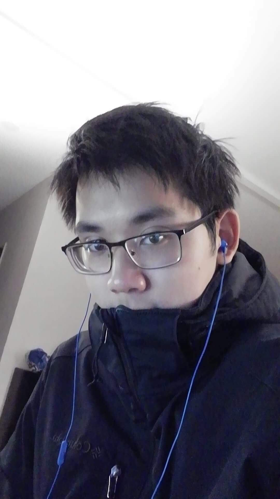

I'm Vinci Wu.
Currently a Junior attending the State University at Buffalo pursuing my Bachelors of Science in Computer Science. This is my personal website and I hope to regularly update it to record events in my life and Computer Science career.

Currently a Junior attending the State University at Buffalo pursuing my Bachelors of Science in Computer Science. This is my personal website and I hope to regularly update it to record events in my life and Computer Science career.
It seems I have fallen into a severe slump. I don't know the specific cause, but it has started at the beginning of 2021. I have found myself demotivated and not accomplishing much. Hopefully, this slump will end soon, and I can resume improving upon this website and myself.
I have decided to also use this website as a place for an online personal blog. While this choice may be premature, I feel it would benefit me to record what's going on in my life. Currently, there isn't much. I'm on my winter break and have used the time to seek internships but mostly have tried to look for any personal projects to undertake. Unfortunately, I have not been able to come up with any ideas. It's much harder to start a personal project than expected. Regardless, I hope to update this website semi-frequently. Probably once every two weeks or monthly. There is not much that happens during my daily life, especially since the COVID-19 pandemic is still ongoing. Nevertheless, I hope this is the start of something good.